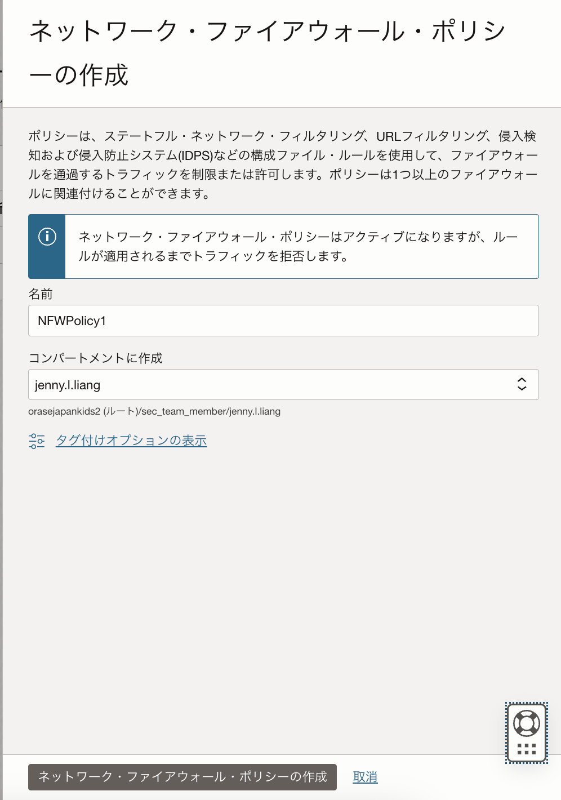
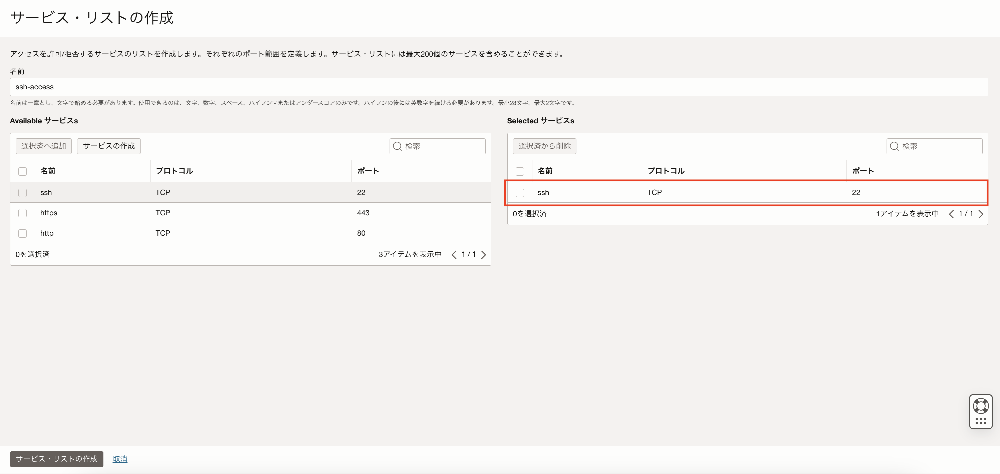
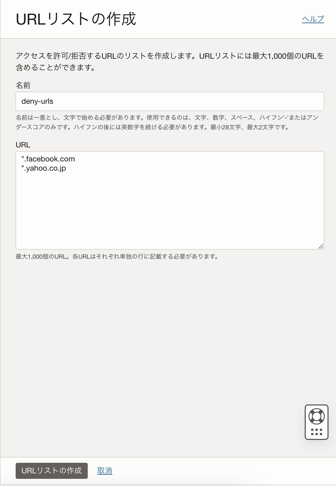
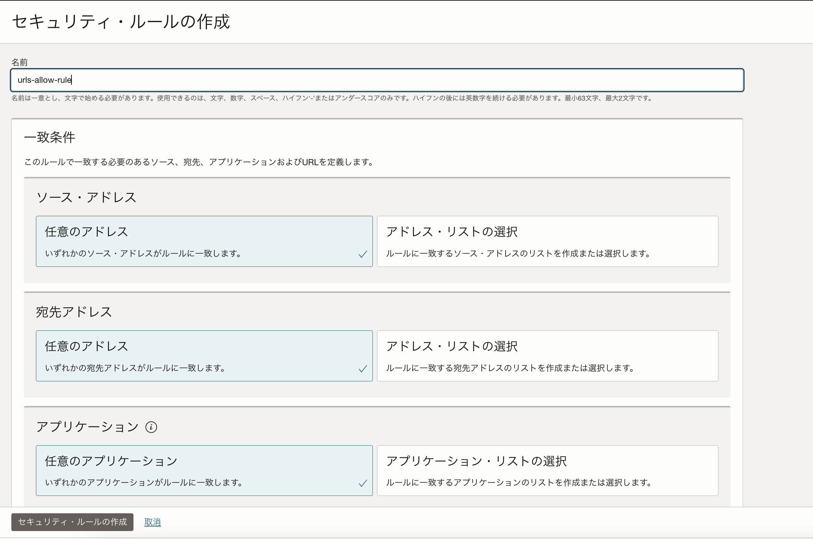
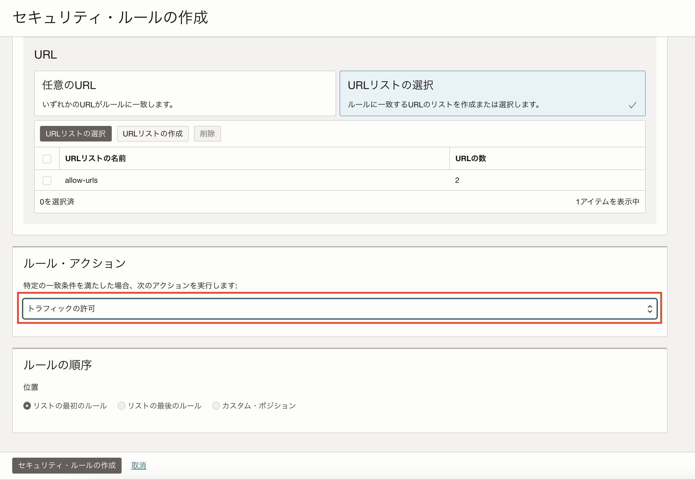
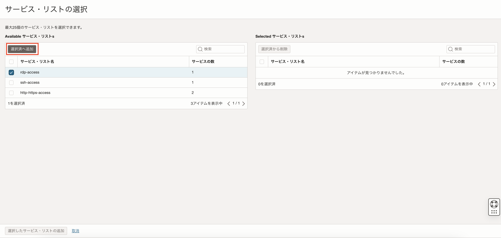

パロアルトネットワークスの次世代ファイアウォール技術を基に構築されたOCIクラウドネイティブのマネージド・ファイアウォール「OCI Network Firewall」が2022年7月にリリースされました。「OCI Network Firewall」はURLフィルタリングやTSL/SSL検査などの機能を提供します。 本チュートリアルではOCI Network Firewallの環境を構築し、OCI Network Firewallの動作を確認します。
所要時間 : 約70分
前提条件 :
- ユーザーに必要なIAMポリシーが割り当てられていること。ポリシーの詳細はドキュメントを参照ください。
注意 :
- ※チュートリアル内の画面ショットについてはOracle Cloud Infrastructureの現在のコンソール画面と異なっている場合があります。
はじめに :
- 以下が本チュートリアルで作成するNetwork Firewallの構成図です。
- Network Firewallについて
Network FirewallはOCIクラウド環境に入るトラフィックと、サブネット間のトラフィックを可視化します。 Network Firewallはファイアウォールとして、Network Firewallを通過するトランスポート・レイヤー・セキュリティ（TLS）暗号化トラフィックを含むすべてのリクエストを検査し、ユーザーが構成したファイアウォール・ポリシー・ルールに基づいて、許可、拒否、ドロップ、侵入検出、防止などのアクションを実行します。 Network Firewallは以下のようなユースケースにてご利用いただくことが可能です。
- パロアルトネットワークスの脅威シグネチャおよび脅威分析エンジンを用いて、既知の脆弱性に対する攻撃、マルウェア、C&Cサーバー等の脅威の検知・防御
-
アウトバウンドへの不正通信を識別し、機密性の高いデータ流出を抑止
- 各サブネットとルート表について
インターネットを経由してPublic Subnet内のインスタンスに対するインバウンドのトラフィックが発生すると、「Internet Gatewayルート表」のルールによりトラフィックはNFW SubnetにあるNetwork Firewallを通過します。その後Network Firewallによって検査されたトラフィックはPublic Subnet内のインスタンスへ転送されます。
Public Subnet内のインスタンスから発生するインターネットへのアウトバウンドのトラフィックも同様に、「Public Subnetルート表」のルールによりNetwork Firewallへ転送されます。その後、「NFW Subnetルート表」のルールにより、Network Firewallによって検査されたアウトバウンド通信はInternet Gatewayを介してインターネットに出ます。
- アプリケーション・リストについて
Network Firewallポリシーのルールの作成時に使用できるICMPまたはICMPv6コードのリストを作成することができます。
- サービス・リストについて
Network Firewallポリシーのルールの作成時に使用できるTCPまたはUDPのポート番号のリストを作成することができます。
- URLリストについて
Network Firewallポリシーのルールの作成時に使用できるURLのリストを作成することができます。
- アドレス・リストについて
Network Firewallポリシーのルールの作成時に使用するIPv4, IPv6またはFQDNのリストを作成することができます。
- セキュリティ・ルールについて
Network Firewallポリシーにて作成したアプリケーション・リスト、サービス・リスト、URLリスト、アドレス・リストを基にアクセスを許可/拒否、または脅威検知/脅威防御するよう設定することが可能です。
本チュートリアルではポート番号22, 3389, 443のアクセスと、URL「www.google.com」「www.google.com」のアクセスを許可します。一方「www.yahoo.co.jp」「www.facebook.com」のアクセスを拒否し、実際にコンピュートインスタンスから各URLへアクセスが許可/拒否されることを確認します。
- ユーザーについて
本チュートリアルでは、Network Firewallの環境を構築したらユーザーとしてSSHでPublic Subnet内のコンピュートインスタンスにアクセスし、コンピュートインスタンスからネットワーク・ファイアウォール・ポリシーで設定したURLへのアクセスが許可/拒否されることを確認します。
URLのアクセス制御の動作確認方法として、wgetコマンドを用いる方法と、ブラウザを用いる方法の2つを紹介します。
1. ネットワークの構築
1-1. VCNの作成
OCIコンソール画面左上のメニューボタン → ネットワーキング → 仮想クラウド・ネットワーク → 「VCNの作成」ボタンをクリックします。

仮想クラウド・ネットワークの作成画面にて以下項目を入力し、残りはデフォルトのまま「VCNの作成」ボタンをクリックします。
名前- 任意 例）VCN1コンパートメント- VCNを作成したいコンパートメントを選択IPv4 CIDR Blocks- 10.0.0.0/16
1-2. Internet Gatewayの作成
手順1-1で作成したVCNの詳細画面の左下のリソースから「インターネット・ゲートウェイ」→「インターネット・ゲートウェイの作成」ボタンをクリックします。

「インターネット・ゲートウェイの作成」画面にて、任意のインターネット・ゲートウェイの名前を入力し、「インターネット・ゲートウェイの作成」ボタンをクリックします。

1-3. ルート表の作成
本チュートリアルでは、Internet Gatewayと各サブネット用のルート表を作成します。 手順1-1で作成したVCNの詳細画面の左下のリソースから「ルート表」を選択し、「ルート表の作成」ボタンをクリックします。
「ルート表の作成」画面にて、任意のインターネット・ゲートウェイ名を入力し、「作成」ボタンをクリックします。
- Internet Gateway用のルート表
名前- 任意 例）Route Table for IGW

- Network Firewallを配置するサブネット用のルート表
名前- 任意 例）Route Table for NFW Subnet

- コンピュートインスタンスを配置するサブネット用のルート表
名前- 任意 例）Route Table for Public Subnet

1-4. Security Listの作成
Network Firewallインスタンスを配置するサブネット、コンピュートインスタンスを配置するサブネットそれぞれのSecurity Listを作成します。 手順1-1で作成したVCNの詳細画面の左下のリソースから、「セキュリティ・リスト」→「セキュリティ・リストの作成」ボタンをクリックします。 表示された「セキュリティ・リストの作成」画面にて以下項目を入力し、「セキュリティ・リストの作成」ボタンをクリックします。
- Network Firewallインスタンスを配置するサブネットのSecurity List
名前- 任意 例）Security List for NFW Subnet

- コンピュートインスタンスを配置するサブネットのSecurity List
名前- 任意 例）Security List for Public Subnet

1-5. OCI Network Firewallインスタンスを配置するSubnetの作成
Network Firewallインスタンスを配置するサブネットを作成します。 手順1-1で作成したVCNの詳細画面の左下のリソースから、「サブネット」→「サブネットの作成」ボタンをクリックします。 表示された「サブネットの作成」画面にて、以下項目を入力し、「サブネットの作成」ボタンをクリックします。
名前- 任意 例）NFW Subnetサブネット・タイプ- リージョナルIPv4 CIDR Block- 10.0.2.0/24ルート表- 手順1-3で作成したNetwork Firewallを配置するサブネット用のルート表を選択サブネット・アクセス- パブリックDHCPオプション- default DHCP Optionsを選択（Default DHCP OptionsはVCNの作成時に自動的に作成されます）セキュリティ・リスト- 手順1-4で作成した、Network Firewallインスタンスを配置するサブネットのSecurity Listを選択


1-6. コンピュートインスタンスを配置するSubnetの作成
インスタンスを配置するサブネットを作成します。 手順1-1で作成したVCNの詳細画面の左下のリソースから、「サブネット」→「サブネットの作成」ボタンをクリックします。 表示された「サブネットの作成」画面にて、以下項目を入力し、「サブネットの作成」ボタンをクリックします。
名前- 任意 例）Public Subnetサブネット・タイプ- リージョナルIPv4 CIDR Block- 10.0.1.0/24ルート表- 手順1-3で作成したコンピュートインスタンスを配置するサブネット用のルート表を選択サブネット・アクセス- パブリックDHCPオプション- default DHCP Optionsを選択（Defualt DHCP OptionsはVCNの作成時に自動的に作成されます）セキュリティ・リスト- 手順1-4で作成した、コンピュートインスタンスを配置するサブネットのSecurity Listを選択


2. Network Firewallポリシーの作成
本チュートリアルでは、Network Firewallポリシーでサービス・リストとURLリストを作成し、ポート番号とURLによりアクセスを制御するルールを作成します。
2-1. 基本情報の入力
OCIコンソール画面左上のメニューボタン → アイデンティティとセキュリティ → ファイアウォール → ネットワーク・ファイアウォール・ポリシー → ネットワーク・ファイアウォール・ポリシーの作成をクリックします。 表示されたポリシーの作成画面にて任意のポリシー名を入力し、「ポリシーの作成」ボタンをクリックします。

ポリシーを作成すると、ポリシーの詳細画面が表示されます。

2-2. サービス・リストの作成
アクセスを許可するポート番号を「サービス」として作成し、「サービス・リスト」に追加します。 手順2-1で作成したポリシー詳細画面左下のポリシー・リソースから「サービス・リスト」を選択し、「サービス・リストの作成」ボタンをクリックします。

「サービス・リストの作成」画面にて、任意のサービス・リスト名を入力します。
※例）「http-https-access」
サービス・リスト名を入力したら、「サービスの作成」ボタンをクリックします。

「サービスの作成」画面にて、以下を入力し、「Create and select service」を選択します。
名前- httpプロトコル- TCPポート範囲- 80-80

同じように、以下httpsの443ポートをサービスとして、サービス・リストに追加します。
名前- httpsプロトコル- TCPポート範囲- 443-443

httpとhttpsのサービスのボックスにチェックを入れ、「選択済へ追加」ボタンをクリックします。
サービス・リストにサービスを追加したら画面下の「サービス・リストの作成」ボタンをクリックします。

同じ手順でsshアクセスに使用するポート22番とリモートデスクトップ接続に使用するポート3389番をサービスとして作成し、それぞれをサービス・リストに追加します。
サービス・リスト名- ssh-accessサービス名- sshプロトコル- TCPポート範囲- 22-22

サービス・リスト名- rdp-accessサービス名- rdpプロトコル- TCPポート範囲- 3389-3389

以上の手順でサービス・リストの作成は完了です。
2-3. URLリストの作成
続いて、アクセスを許可するURLのリストと、アクセスを拒否するURLのリストを作成します。
ポリシー詳細画面左下のポリシー・リソースから「URLリスト」を選択し、「URLリストの作成」ボタンをクリックします。
表示された「URLリストの作成」画面にて以下を入力し、アクセスを許可するURLリストを追加します。

本チュートリアルでは検証としてOracleとGoogleのドメインを許可リストに追加します。
名前- allow-urlsプロトコル- *.oracle.com, *.google.com URLを追加したら、画面下の「URLリストの作成」ボタンをクリックします。

同じ手順でアクセスを拒否するURLリストも作成します。
本チュートリアルでは検証として、FacebookとYahoo! Japanのドメインを拒否リストに追加します。
名前- deny-urlsプロトコル- *.facebook.com, *.yahoo.co.jp

以上の手順でURLリストの作成は完了です。
2-4. セキュリティ・ルールの作成
セキュリティ・ルールでは、以下4種類のルールを作成します。
- 指定したURLリストへのインターネット経由のアクセスを許可するルール
- 指定したURLリストへのインターネット経由のアクセスを拒否するルール
- SSHアクセスを許可するルール
- リモート・デスクトップ接続を許可するルール
まずは指定したURLへのインターネットを経由したアクセスを許可ルールを作成します。
ポリシー詳細画面左下のポリシー・リソースから「セキュリティ・ルール」を選択し、「セキュリティ・ルールの作成」ボタンをクリックします。
セキュリティ・ルールの作成画面にてセキュリティ・ルール名を入力します。
例）urls-allow-rule

一致条件の項目にて、「ソースIPアドレス」、「宛先IPアドレス」、「アプリケーション」はすべて「任意」を選択します。
「サービス」にて「サービス・リストの選択」をクリックし、「サービス・リストの選択」ボタンをもう一度クリックします。

「サービス・リストの選択」画面にて、手順2-1で作成したポート80,443番を追加したサービス・リストにチェックをいれ、「選択済へ追加」ボタンをクリックします。

選択されたサービス・リストの欄に表示されていることを確認したら、画面下の「選択したサービス・リストの追加」ボタンをクリックします。

続いて、アクセスを許可するURLを指定します。
URLsの項目にて、「URLリストの選択」をクリックし、再度「URLリストの選択」ボタンをクリックします。

URLリストの選択画面にて、アクセスを許可するURLを追加したリストをチェックし、「選択済へ追加」ボタンをクリックします。

選択されたURLリストの欄に表示されていることを確認したら、画面下の「選択したURLリストの追加」ボタンをクリックします。

続いて、セキュリティ・ルールの作成画面の「ルール・アクション」の項目にて「トラフィックの許可」を選択し、「セキュリティ・ルールの作成」ボタンをクリックします。

以上で、指定したURLへのインターネットを経由したアクセスを許可するルールを作成する手順は完了です。
続いて、指定したURLへのインターネットを経由したアクセスを拒否するルールを作成します。
「セキュリティ・ルールの作成」ボタンをクリックし、セキュリティ・ルールの作成画面にてセキュリティ・ルール名を入力します。
例）urls-deny-rule

「サービス」にて「サービス・リストの選択」をクリックし、「サービス・リストの選択」ボタンをもう一度クリックします。
「サービス・リストの選択」画面にて、手順2-1で作成したポート80,443番を追加したサービス・リストにチェックをいれ、「選択済へ追加」ボタンをクリックします。
選択されたサービス・リストの欄に表示されていることを確認したら、画面下の「選択したサービス・リストの追加」ボタンをクリックします。
続いて、アクセスを拒否するURLを指定します。
URLsの項目にて、「URLリストの選択」をクリックし、再度「URLリストの選択」ボタンをクリックします。
URLリストの選択画面にて、アクセスを拒否するURLを追加したリストをチェックし、「選択済へ追加」ボタンをクリックします。

選択されたURLリストの欄に表示されていることを確認したら、画面下の「選択したURLリストの追加」ボタンをクリックします。
続いて、セキュリティ・ルールの作成画面の「ルール・アクション」の項目にて「トラフィックの拒否」を選択し、「セキュリティ・ルールの作成」ボタンをクリックします。
以上で、指定したURLへのインターネットを経由したアクセスを拒否するルールを作成する手順は完了です。
続いて、SSHアクセスを許可するルールを作成します。
「セキュリティ・ルールの作成」ボタンをクリックし、セキュリティ・ルールの作成画面にてセキュリティ・ルール名を入力します。
例）ssh-allow

一致条件の項目にて、「ソースアドレス」、「宛先アドレス」、「アプリケーション」、「URL」はすべて「任意」を選択します。
「サービス」にて「サービス・リストの選択」をクリックし、「サービス・リストの選択」ボタンをもう一度クリックします。
「サービス・リストの選択」画面にて、手順2-1で作成したポート22番を追加したサービス・リストにチェックをいれ、「選択済へ追加」ボタンをクリックします。

選択されたサービス・リストの欄に表示されていることを確認したら、画面下の「選択したサービス・リストの追加」ボタンをクリックします。
「ルール・アクション」の項目にて「トラフィックの許可」を選択し、「セキュリティ・ルールの作成」ボタンをクリックします。

以上の手順で、SSHアクセスを許可するルールを作成する手順は完了です。
最後にリモート・デスクトップ接続を許可するルールを作成します。
「セキュリティ・ルールの作成」ボタンをクリックし、セキュリティ・ルールの作成画面にてセキュリティ・ルール名を入力します。
例）rdp-allow

一致条件の項目にて、「ソースアドレス」、「宛先アドレス」、「アプリケーション」、「URL」はすべて「任意」を選択します。
「サービス」にて「サービス・リストの選択」をクリックし、「サービス・リストの選択」ボタンをもう一度クリックします。
「サービス・リストの選択」画面にて、手順2-1で作成したポート3389番を追加したサービス・リストにチェックをいれ、「選択済へ追加」ボタンをクリックします。

選択されたサービス・リストの欄に表示されていることを確認したら、画面下の「選択したサービス・リストの追加」ボタンをクリックします。
「ルール・アクション」の項目にて「トラフィックの許可」を選択し、「セキュリティ・ルールの作成」ボタンをクリックします。

以上で、リモート・デスクトップ接続を許可するルールの作成は終了です。
2-5. (補足)SSLについて
本チュートリアルでは設定しませんが、ネットワーク・ファイアウォール・ポリシーの「マップされたシークレット」、「復号化プロファイル」にて証明書関連の設定を行うことが可能です。 クライアントとサーバー間の通信がSSLによって暗号化されている場合、本機能を利用することでHTTPSトラフィックを復号化し、通信の内容を検査することが可能です。
「マップされたシークレット」とは、OCI Vaultサービスで設定された証明書認証のことを指します。「マップされたシークレット」は「SSL転送プロキシ」または「SSLインバウンド検査」を使用してSSL/TLSトラフィックを復号化、検査するために使用されます。「マップされたシークレット」を作成するには、OCI Vaultサービスでシークレット情報が作成されている必要があります。 証明書認証の設定についてはドキュメントを参照ください。
「復号化プロファイル」では、「SSL転送プロキシ」または「SSLインバウンド検証」の設定を行うことができます。 「SSL転送プロキシ」では、Network Firewallが内部クライアントとサーバーの仲介サーバーとなり、内部クライアントと外部サーバーそれぞれと通信をします。 「SSLインバウンド検査」では外からのインバウンド通信を復号化し、内容を検査します。
「SSL転送プロキシ」は内部ユーザーからNetwork Firewallを経由してインターネットへ出るSSL/TLSトラフィックを復号化し、以下のような条件を検知しアクションを取ることが可能です。
- 期限切れ証明書をブロック
- 信頼されていない発行者をブロック
- ブロック・タイムアウト証明書
- サポートされていない暗号スイートをブロック
- 証明書拡張の制限
- 不明な証明書をブロック
- 処理リソースがない場合はブロック
「SSLインバウンド検査」は登録されたサーバーの証明書、秘密鍵を使用して外部のクライアントからNetwork Firewallに保護されたサーバーへのインバウンドのSSL/TLS通信を復号化し、以下の条件を検知してアクションを取ることが可能です。
- サポートされていないSSLバージョンのセッションをブロック
- サポートされていないSSL暗号スイートのセッションをブロック
- 処理リソースがない場合はブロック
3. Network Firewall インスタンスの作成
続いてNetwork Firewallインスタンスを作成します。 OCIコンソール画面左上のメニューボタン → アイデンティティとセキュリティ → ファイアウォール → ネットワーク・ファイアウォール →「ネットワーク・ファイアウォールの作成」ボタンをクリックします。
表示された「ネットワーク・ファイアウォールの作成」画面にて以下項目を入力し、「ネットワーク・ファイアウォールの作成」ボタンをクリックします。
名前- 任意 例）NFW1ネットワーク・ファイアウォール・ポリシー- 手順2で作成したネットワーク・ファイアウォール・ポリシーを選択します。仮想クラウド・ネットワーク- 手順1-1で作成したVCNを選択します。サブネット- 手順1-5で作成したサブネットを選択します。ネットワーク・ファイアウォール可用性ドメイン- 任意 （今回はBUKv:AP-TOKYO-1-AD-1を選択します）

Network Firewallインスタンスは約40分程で作成が完了し、アクティブになります。
Network Firewallの作成中に、Network Firewallインスタンスの詳細画面にIPv4アドレスが表示されるので、IPv4アドレスが割り当てられたらVCNのSecurity Listとルート表を編集します。

4. ルート表の編集
Network FirewallのプライベートIPアドレスを元に、Internet Gatewayと各サブネットのルート表を編集します。
4-1. Internet Gatewayのルート表の編集
OCIコンソール画面左上のメニューボタン → ネットワーキング → 仮想クラウド・ネットワーク → 手順1で作成したVCN名をクリックし、VCNの詳細画面に遷移します。 VCN詳細画面左下のリソースから「ルート表」をクリックし、手順1-3で作成したInternet Gateway用のルート表をクリックします。

ルート表の詳細画面にて、「ルート・ルールの追加」ボタンをクリックします。 表示された「ルート・ルールの追加」画面にて、以下項目を入力し、画面左下の「ルート・ルールの追加」ボタンをクリックします。
ターゲット・タイプ- プライベートIP宛先タイプ- CIDRブロック宛先CIDRブロック- コンピュートインスタンスを配置するサブネットのCIDRを入力 例）10.0.1.0/24ターゲット選択- Network FirewallインスタンスのプライベートIPアドレスを入力

4-2. Network Firewallインスタンスを作成したサブネットのルート表の編集
続いて、VCN詳細画面左下のリソースの「ルート表」から、手順1-3で作成したNetwork Firewallインスタンスを配置するサブネット用のルート表をクリックします。

ルート表の詳細画面にて、「ルート・ルールの追加」ボタンをクリックします。 表示された「ルート・ルールの追加」画面にて、以下のルート・ルールを作成し、画面左下の「ルート・ルールの追加」ボタンをクリックします。
ターゲット・タイプ- インターネット・ゲートウェイ宛先CIDRブロック- 0.0.0.0/0ターゲット・インターネット・ゲートウェイ- 手順1-2で作成したInternet Gatewayを選択
4-3. コンピュートインスタンスを作成するサブネットのルート表の編集
続いて、VCN詳細画面左下のリソースの「ルート表」から、手順1-3で作成したコンピュートインスタンスを配置するサブネット用のルート表をクリックします。
 ルート表の詳細画面にて、「ルート・ルールの追加」ボタンをクリックします。
表示された「ルート・ルールの追加」画面にて、以下項目を入力し、画面左下の「ルート・ルールの追加」ボタンをクリックします。
ルート表の詳細画面にて、「ルート・ルールの追加」ボタンをクリックします。
表示された「ルート・ルールの追加」画面にて、以下項目を入力し、画面左下の「ルート・ルールの追加」ボタンをクリックします。
ターゲット・タイプ- プライベートIP宛先タイプ- CIDRブロック宛先CIDRブロック- 0.0.0.0/0ターゲット選択- Network FirewallインスタンスのプライベートIPアドレスを入力

4-4. Internet Gateway用のルート表をInternet Gatewayに紐づけ
VCN詳細画面左下のリソースの「インターネット・ゲートウェイ」から、手順1-2で作成したInternet Gatewayの左の3つの点をクリックし、「別のルート表の関連付け」を選択します。

表示された「別のルート表の関連付け」画面にて、手順1-3で作成したInternet Gateway用のルート表を選択し、「別のルート表の関連付け」ボタンをクリックします。

5. Security Listの編集
本チュートリアルでは便意的に全CIDRから各IPプロトコルの全ポート宛の通信を許可するよう設定します。実際に本番環境などで設定する際は必要最低限のポートのみ許可するように設定してください。
5-1. コンピュートインスタンスを立ち上げる用のサブネットのSecurity Listの編集
OCIコンソール画面左上のメニューボタン → ネットワーキング → 仮想クラウド・ネットワーク → 手順1で作成したVCN名をクリックし、VCNの詳細画面に遷移します。 VCN詳細画面左下のリソースから「セキュリティ・リスト」を選択し、手順1-4で作成したコンピュートインスタンスを立ち上げるサブネット用のSecurity List名をクリックします。

セキュリティ・リストの詳細画面で「イングレス・ルールの追加」ボタンをクリックします。 表示された「イングレス・ルールの追加」画面にて3つのイングレスルールを作成します。
- イングレス・ルール1
ソース・タイプ- CIDRソースCIDR- 0.0.0.0/0IPプロトコル- TCP
その他は記入せずに、「+別のイングレス・ルール」ボタンをクリックします。

- イングレス・ルール2
ソース・タイプ- CIDRソースCIDR- 0.0.0.0/0IPプロトコル- ICMP その他は記入せずに、「+別のイングレス・ルール」ボタンをクリックします。

以下のように、イングレス・ルール3を記入したら画面左下の「イングレス・ルールの追加」ボタンをクリックします。
- イングレス・ルール2
ソース・タイプ- CIDRソースCIDR- 0.0.0.0/0IPプロトコル- UDP

続いて、セキュリティ・リストの詳細画面左下の「リソース」から「エグレス・ルール」を選択し、「エグレス・ルールの追加」ボタンをクリックします。 表示された「エグレス・ルールの追加」画面にて、以下のようにエグレス・ルールを記入したら画面左下の「エグレス・ルールの追加」ボタンをクリックします。
宛先タイプ- CIDRソースCIDR- 0.0.0.0/0IPプロトコル- すべてのプロトコル

5-2. Network Firewallインスタンスを配置するサブネット用のSecurity Listの編集
VCN詳細画面左下のリソースから「セキュリティ・リスト」を選択し、手順1-4で作成したNetwork Firewallインスタンスを立ち上げるサブネット用のSecurity List名をクリックします。

セキュリティ・リストの詳細画面で「イングレス・ルールの追加」ボタンをクリックします。 表示された「イングレス・ルールの追加」画面にて3つのイングレスルールを作成します。
- イングレス・ルール1
ソース・タイプ- CIDRソースCIDR- 0.0.0.0/0IPプロトコル- TCP
その他は記入せずに、「+別のイングレス・ルール」ボタンをクリックします。
- イングレス・ルール2
ソース・タイプ- CIDRソースCIDR- 0.0.0.0/0IPプロトコル- ICMP その他は記入せずに、「+別のイングレス・ルール」ボタンをクリックします。
以下のように、イングレス・ルール3を記入したら画面左下の「イングレス・ルールの追加」ボタンをクリックします。
- イングレス・ルール2
ソース・タイプ- CIDRソースCIDR- 0.0.0.0/0IPプロトコル- UDP
続いて、セキュリティ・リストの詳細画面左下の「リソース」から「エグレス・ルール」を選択し、「エグレス・ルールの追加」ボタンをクリックします。 表示された「エグレス・ルールの追加」画面にて、以下のようにエグレス・ルールを記入したら画面左下の「エグレス・ルールの追加」ボタンをクリックします。
宛先タイプ- CIDRソースCIDR- 0.0.0.0/0IPプロトコル- すべてのプロトコル
以上でネットワーク周りの設定は完了です
6. コンピュートインスタンスの作成
OCI Network Firewallの動作を確認するため、Network Firewallに保護されたPublic Subnetにコンピュート・インスタンスを作成します。 作成するコンピュート・インスタンスはLinux/Windowsどちらでも構いません。 手順6-1ではLinuxインスタンスの作成方法、手順6-2ではWindowsインスタンスの作成方法を紹介しています。
6-1. Linuxのコンピュート・インスタンスの作成
OCIコンソール画面左上のメニューボタン → コンピュート → インスタンス → インスタンスの作成をクリックします。 「コンピュート・インスタンスの作成」画面にて、以下項目を入力し、画面左下の「作成」ボタンをクリックします。
名前- 任意 例）Instance1配置（可用性ドメイン）- 任意イメージ- Oracle Linux 8シェイプ- 任意ネットワーキング（仮想クラウド・ネットワーク）- 手順1-1で作成したVCNを選択ネットワーキング（サブネット）- 手順1-6で作成したサブネットを選択パブリックIPアドレス- 「パブリックIPv4アドレスの割当て」を選択SSHキーの追加- 「キー・ペアを自動で生成」を選択し、秘密キーと公開キーをそれぞれ保存します。（手元に既存のSSHキーがある場合は、「公開キー・ファイルのアップロード」または「公開キーの貼りつけ」を選択し、公開キーを登録してください。）


6-2. Windowsのインスタンスの作成
OCIコンソール画面左上のメニューボタン → コンピュート → インスタンス → インスタンスの作成をクリックします。 「コンピュート・インスタンスの作成」画面にて、以下項目を入力し、画面左下の「作成」ボタンをクリックします。
名前- 任意 例）WS1配置（可用性ドメイン）- 任意イメージ- 「イメージの変更」ボタンをクリックし、「Windows」を選択シェイプ- 任意ネットワーキング（仮想クラウド・ネットワーク）- 手順1-1で作成したVCNを選択ネットワーキング（サブネット）- 手順1-6で作成したサブネットを選択パブリックIPアドレス- 「パブリックIPv4アドレスの割当て」を選択


7. OCI Network Firewallの動作確認
最後にNetwork Firewallの動作を確認します。 手順7-1ではwgetコマンドでの確認方法を紹介します。Linuxインスタンスを作成した場合は手順7-1に従って動作を確認してください。Windowsインスタンスでも、Powershellを使用して同様に動作を確認することができます。 またWindowsのインスタンスを作成した場合は、手順7-2に従ってブラウザで動作を確認することも可能です。
7-1. wgetコマンドでの確認
手順6-1で作成したコンピュートインスタンスにSSHでアクセスし、OCI Network Firewallの動作を確認します。
OCIコンソール画面左上のメニューボタン → コンピュート → インスタンス → 手順6-1で作成したLinuxのコンピュート・インスタンス名をクリックし、コンピュート・インスタンスのパブリックIPアドレスを確認します。 OCIのシリアルコンソールやPuttyなどのツールでコンピュート・インスタンスにSSHアクセスします。 ※本チュートリアルではPuttyを使用してSSHアクセスを実施しています。
OCI Network Firewallの設定で、「.google.com」と「.oracle.com」へのアクセスを許可しているので、ターミナルを開き以下コマンドで各ドメインにアクセスできることを確認します。
$wget https://www.oracle.com

$wget https://www.google.com

OCI Network Firewallの設定で、「www.facebook.com」と「www.yahoo.co.jp」へのアクセスを拒否しているので、以下コマンドで各ドメインへのアクセスに失敗することが確認できます。
$wget https://www.facebook.com

$wget https://www.yahoo.co.jp

7-2. Windowsのブラウザから確認
OCIコンソール画面左上のメニューボタン → コンピュート → インスタンス → 手順6-2で作成したWindowsのインスタンス名をクリックし、インスタンスの詳細画面を表示します。 インスタンス詳細画面右上の「インスタンス・アクセス」に記載のある「パブリックIPアドレス」、「ユーザー名」、「初期パスワード」を手元にメモします。

ローカルPC（Windowsの場合）のアプリ「リモートデスクトップ接続」を開き、手順6-2で作成したWindowsのインスタンスのパブリックIPアドレスを入力し、「接続」ボタンをクリックします。

「このリモートコンピューターのIDを識別できません。接続しますか？」というメッセージが表示された場合、「はい」を選択して続行します。

表示されたログイン画面にて、ユーザー名と初期パスワードを入力します。初期パスワードのリセットを促す画面が表示されるので、パスワードをリセットし、Windowsサーバーにログインします。
続いてWindowsのブラウザ「Internet Explorer」を使用するために、ブラウザのセキュリティ機能を無効化します。 Windowsのホーム画面左下のメニューから「Server Manager」を選択します。

表示されたServer Manager左側のメニューから「Local Server」を選択し、「IE Enhanced Security Configuration」の”On”の部分をクリックします。

ポップアップ画面にて、AdministratorsとUsers各設定を”off”にし、「OK」ボタンをクリックします。

続いて、Windowsでブラウザ「Internet Explorer」を開き、googleのホームページにアクセスできることを確認します。
https://www.google.com

一方で、yahooのホームページにはアクセスができないことも確認できます。
https://www.yahoo.co.jp

以上でNetwork Firewallの構築と動作確認は完了です。 今回設定した内容の他にも、不正トラフィックの侵入を検知/防止したり、SSL/TLSトラフィックの検査など様々なファイアウォール機能を提供しているので、是非色々な設定を試してみてください。